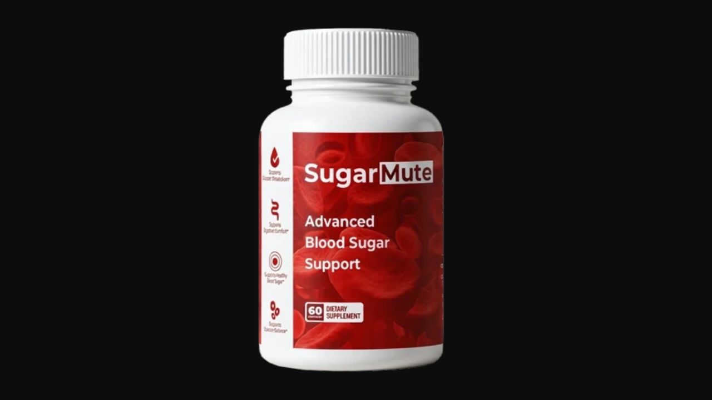

Health Reviews Labs investigated SugarMute's 10-ingredient approach to glucose regulation — covering absorption, sensitivity, uptake, protection, and gut-metabolic pathways simultaneously. Here's the honest breakdown of what each ingredient does and what realistic results look like.

10 Ingredients · 5 Blood Sugar Pathways · GMP-Certified · 90-Day Guarantee
→ Click Here for Official SiteBlack Walnut + Flaxseed soluble fiber creates a gel matrix in the intestine — slowing carbohydrate breakdown and glucose entry into blood.
Berberine activates AMPK — an insulin-independent glucose uptake pathway. Cells import glucose even when insulin receptors are partially desensitized.
Cinnamon Bark and Bitter Melon improve insulin receptor sensitivity — strengthening the signal that tells cells to open glucose channels.
Alpha Lipoic Acid protects pancreatic beta cells from oxidative stress — addressing the progressive deterioration of insulin production over time.
Lactobacillus Acidophilus + Aloe Vera reduce intestinal inflammation that contributes to insulin resistance through systemic inflammatory signals.
Provides juglone and tannins with documented antimicrobial gut activity and soluble fiber that slows intestinal glucose absorption. Published in the Journal of Medicinal Food for gut health and antimicrobial properties.
Rich in soluble fiber (mucilage) and omega-3 alpha-linolenic acid. The soluble fiber slows carbohydrate digestion; omega-3s provide anti-inflammatory support. Pan et al. (2019) published on flaxseed's glycemic control benefits in type 2 diabetes.
AMPK activator — the mechanism shared with metformin but through a different molecular interaction. Activates an insulin-independent glucose uptake pathway, allowing cellular glucose import even when insulin receptor sensitivity is reduced.
Cinnamaldehyde and proanthocyanidins improve insulin receptor sensitivity by activating insulin signaling pathways at the cellular level. One of the most consistently supported botanical compounds in blood sugar research.
Charantin and polypeptide-p with documented glucose-lowering activity. Activates GLUT4 glucose transporters and provides additional insulin-mimicking activity through separate receptor mechanisms from Berberine.
Potent antioxidant with particular activity in mitochondria of pancreatic beta cells. Protects insulin-producing cells from the oxidative stress that progressively reduces insulin output over time. Reviewed by Nikolaos Papanas and Dan Ziegler (2014) for neuropathy and metabolic applications.
Essential cofactor for insulin receptor function — chromium deficiency is associated with impaired insulin signaling. Supplementation supports the cellular machinery that processes insulin's signal.
Three gut-support ingredients: Aloe Vera for prebiotic and anti-inflammatory mucosal support; Plum polyphenols for antioxidant protection; L. Acidophilus for gut barrier integrity and the gut-metabolic axis connection to insulin sensitivity.
SugarMute's 10-ingredient formula covers blood sugar regulation from five distinct biological angles — absorption, AMPK activation, insulin sensitivity, beta cell protection, and gut-metabolic axis. This multi-pathway coverage is more comprehensive than single-ingredient or dual-ingredient blood sugar supplements. Manufactured in a GMP-certified, FDA-registered US facility with third-party testing and a 90-day guarantee. The Berberine drug interaction warning is significant and worth taking seriously for anyone on prescribed diabetes medication.
Confirm current pricing on the official site before purchase.
10 Ingredients · 5 Pathways · GMP-Certified · 90-Day Guarantee
→ Click Here for Official Site